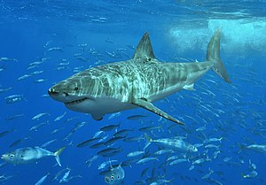

PUMA: El puma, león de montaña o león americano (Nombre científico: Puma concolor) es un mamífero carnívoro de la familia Felidae nativo de América. Este felino vive en más lugares que cualquier otro mamífero silvestre terrestre del continente, ya que se extiende desde el Yukón, en Canadá, hasta el sur de la cordillera de los Andes y la Patagonia en América del Sur. El puma es adaptable y generalista, por lo que vive en los principales biomas de toda América. Es el segundo mayor félido en el continente americano, después del jaguar, y el cuarto más grande del mundo, después del tigre, y el león. Su tamaño es algo mayor que el del leopardo, aunque está más emparentado con los pequeños felinos, ya que, a diferencia de los grandes félidos del género Panthera, que pueden rugir excepto el irbis, el puma ronronea como los felinos menores. Como cazador y depredador de emboscada, el puma obtiene una amplia variedad de presas. Su principal alimento son los ungulados como el ciervo, en particular en la parte septentrional de su área de distribución, pero también caza camélidos como el guanaco y especies tan pequeñas como insectos y roedores. Prefiere hábitat con vegetación densa durante las horas de acecho, pero puede vivir en zonas abiertas. El puma es territorial y tiene una baja densidad de población. La extensión de su territorio depende de la vegetación y de la abundancia de presas. Aunque es un gran depredador, no siempre es la especie dominante en su área de distribución, como cuando compite con otros depredadores como el jaguar. Se trata de un felino solitario que por lo general evita a las personas. Los ataques a seres humanos son raros, aunque su frecuencia ha aumentado en los últimos años
TIBURÓN BLANCO
En 1758 Carlos Linneo dio al tiburón blanco su primer nombre científico, Carcharodon carcharias. Andrew Smith le dio el nombre genérico Carcharodon en 1833, y en 1873 el nombre genérico fue identificado con el nombre específico de Linnaeus y el nombre científico actual, Carcharodon carcharias. Carcharodon viene de las palabras griegas καρχαρίας karcharías, que significa ‘agudo’ o ‘dentado’, y οδους, odous, que significa ‘diente’. El tiburón blanco pertenece a la clase Chondrichthyes. Esta clase de peces representan uno de los linajes de vertebrados más antiguos, que surgieron hace más de cuatrocientos millones de años. Los tiburones, específicamente, comprenden ∼45% de las especies conocidas de Elasmobranchii e incluyen muchos de los depredadores oceánicos de nivel meso y ápice. Ascendencia y registro fósil Un diente fósil de tiburón blanco de 4 cm de longitud, del Mioceno, encontrado en los sedimentos del desierto de Atacama de Chile El gran tiburón blanco existe desde el Mioceno. Los fósiles más antiguos conocidos del tiburón blanco datan de hace unos dieciséis millones de años aproximadamente. Sin embargo la filogenia del gran tiburón blanco sigue siendo objeto de debate. La hipótesis original de los orígenes del tiburón blanco es que comparte un ancestro común con un tiburón prehistórico, como el megalodon. Las similitudes entre los restos físicos y el tamaño extremo de ambos llevó a muchos científicos a creer que estos tiburones estaban estrechamente relacionados, y el nombre de Carcharodon megalodon se aplicó a este último. Sin embargo, una nueva hipótesis propone que C. megalodon y el tiburón blanco son parientes lejanos (aunque compartiendo también la familia Lamnidae). El gran tiburón blanco también está más estrechamente relacionado con una antigua especie de tiburón, el tiburón mako, que a C. megalodon, una teoría que parece estar apoyada por el descubrimiento de un conjunto completo de mandíbulas con 222 dientes y las 45 vértebras de Carcharodon hubbelli en 1988 y publicado el 14 de noviembre de 2012. Además, nuevas hipótesis vinculan C. megalodon al género Carcharocles, que también incluye otros tiburones como Megalodon; Otodus obliquus es el antiguo representante del género extinto Carcharocles.